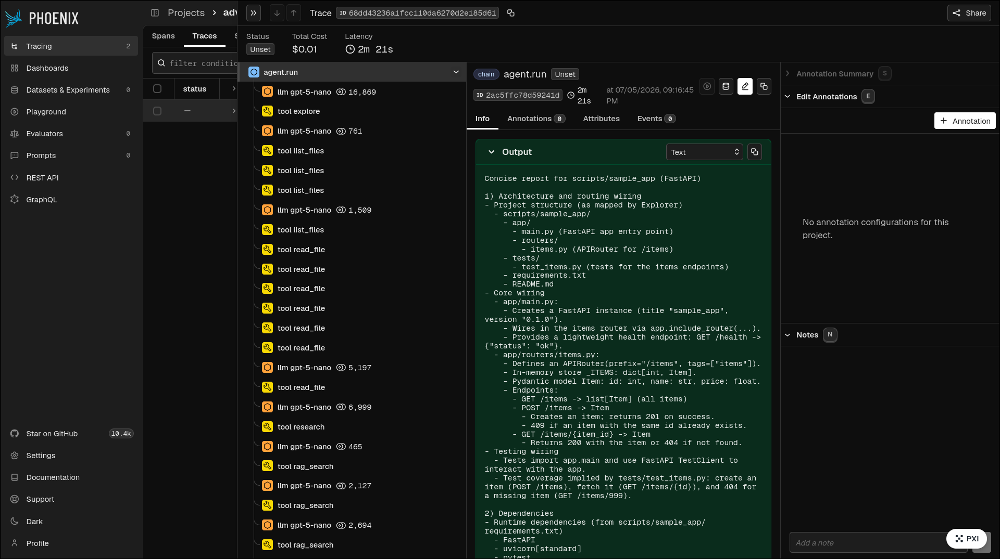
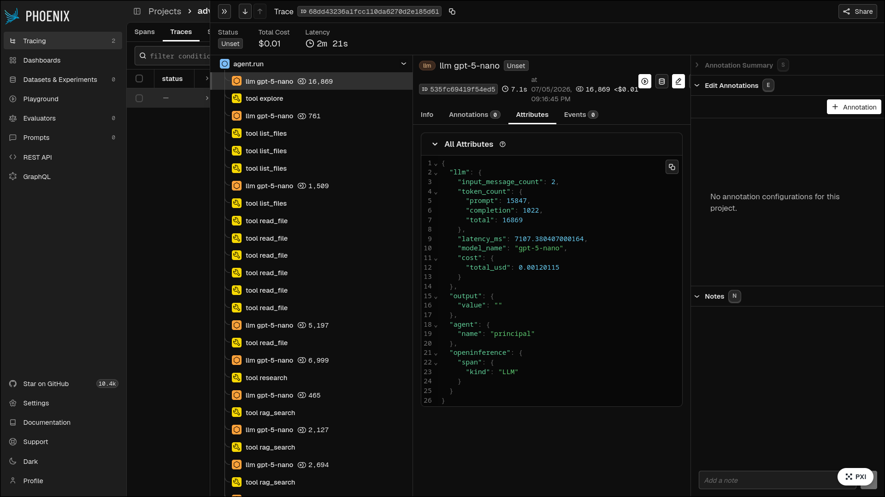

Agente de codigo inspeccionable
Delegacion multiagente, RAG, memoria, politicas y trazas en un solo harness de Python.
Python 3.11
uv + just
OpenAI
Tavily
Delegacion multiagente, RAG, memoria, politicas y trazas en un solo harness de Python.
scripts/sample_appEl loop central se puede leer porque no hay magia de framework: hay objetos con nombre.
read_file + list_filesrag_search + web fallbackrun_command permitidoTaskLedger: request, sources, reports, modified filesChunker produce Chunk(text, source, ordinal).OpenAIEmbeddingModel usa text-embedding-3-small.Retriever hace top-k por similitud coseno.Source(Origin.RAG).NumpyVectorStore: embeddings.npy + chunks.jsonJsonMemoryStore: una memoria por proyectoNo se eligio una base vectorial externa porque el corpus es acotado; numpy + JSON reducen dependencias y hacen la ejecucion reproducible.
APIRouter, endpoints, riesgos, comandosLo importante observado: la segunda corrida arranca briefed por memoria de proyecto, no solo por contexto del modelo.


La leccion principal: la orquestacion confiable debe estar en codigo; no conviene pedirle al modelo que recuerde coordinar todo.